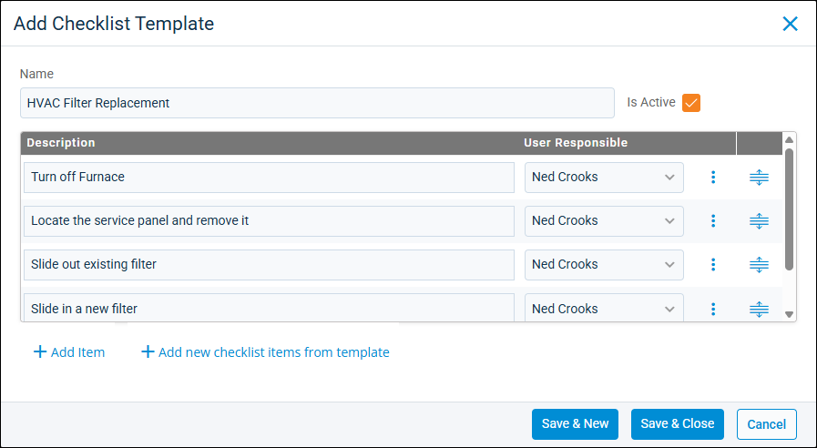

Source: https://rmxhelp.rentmanager.com/Topics/Express/Action/Issues-Checklist-Template-Add.htm
Add a Checklist Template
Checklist templates are saved lists of to-do items that you can use to easily populate the Issue Checklist section of issues in Rent Manager. Checklist templates are helpful for tasks that always require the same steps to complete, such as changing furnace filters or replacing smoke detectors. For example, you can create a list covering the process for monthly maintenance tasks and add it to a recurring issue or an issue included in a make ready process for preparing a unit for a new tenant. When adding a checklist template, you can organize these processes chronologically and select the Rent Manager user responsible for completing each item.
Related Privileges
| Group | Privilege | Column |
|---|---|---|
| Service Manager | Checklist templates | Add, View |
For more information, refer to Control User Access.
To create a checklist template, do the following:
-
Go to
 arrow_forward Services arrow_forward Service Manager arrow_forward Checklist Templates.
arrow_forward Services arrow_forward Service Manager arrow_forward Checklist Templates.
The Checklist Templates page displays. -
Click
 Add Template.
Add Template.
-
Enter the Name of the template.
-
Click
 Add Item.
Add Item.
Alternatively, click Add new checklist items from template to populate the checklist with items from an existing checklist template. On the pop-up, select the Template and click Add. -
In the Description column, enter details about the to-do item (e.g., Prime walls for painting, Replace smoke detector batteries).
-
In the User Responsible column, select the user responsible for completing the checklist item.
Related Privileges
This field populates only with users who have the following privilege:
Group Privilege Column Service Manager Issues View For more information, refer to Control User Access.
-
Once all items are added, click Save & Close to complete the checklist template creation process and close the pop-up. Alternatively, click Save & New to finish adding the template and refresh the pop-up to create another template.